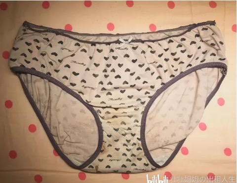

除了三次肢体暴力，我还被Perry精神暴力了
壮壮姐姐 使女的证言 2022-01-24 18:37
在第三次家暴之后，我开始不停地做噩梦，当时宇芽的事情刚爆出来，Perry提出要一起看宇芽的视频，TA说TA想了解家暴相关的事。我们坐在沙发上看宇芽的视频，看完之后TA说，“你看我也没那么暴力，我还可以现在陪你一起看这个视频......”
前言
作为家暴事件中的受害者，我在当下忍受了肢体上以及精神上的摧残，但TA依然没有反思，只是不停地告诉我TA对我做的事情没那么可怕。所以我决定讲出我自己的故事，提醒更多人不要重蹈覆辙。
TA对我进行了三次肢体暴力和关系内强奸，以及无数次精神暴力（包括自残、疲劳审讯......）
第一次肢体暴力
TA用枕头砸我，我用后背挡的。然后TA就摔门出去了，但是TA走到半路，还没有回到房间就又折回来了，推开门上来就把我猝不及防的推倒。用枕头非常大力的砸我，一次又一次，嘴里一直在咆哮，说什么“都是你” “现在这样你开心了么”诸如此类的话。
第二次肢体暴力
Perry冲过来打了我至少2个巴掌，再多的我记不清了，当时整个人头都是懵的，他太用力以至于我眼睛有段时间看不到了。脸上有很清晰的3个指头的印记，左右脸都有，并且事后在我眼睛里发现了我被打掉的美瞳。隔天我下巴开始痛，这种疼痛大概持续了一个星期
第三次肢体暴力
我们在沙发前起了争执，TA把我面前的桌子掀翻了，桌子上的咖啡杯砸到我眼镜上，里面的可乐全洒在我脸上了。事后，我鼻梁很痛。我要洗脸，TA说不可以，就冲着我吐口水。我强烈表示我要去洗脸！TA说“不行”并且用手掐着我的脖子微微用力。我非常恐惧，我和TA商量想要去洗脸，TA不让。然后又疯狂的快速的朝我脸上吐了非常多次口水，我不敢挣扎，因为TA掐着我脖子。
上面这三次肢体暴力都是事实
我愿意为我说出的话负责
↓↓↓以下是精神暴力事件↓↓↓
人物
大壮：也就是当事人，我
Perry：施暴者，一名跨性别女性导演，大壮的前任开放式关系伴侣、大壮的前任『安全、理智、知情同意』关系伴侣
自残事件
时间
2019年12月下旬
旁观者
无旁观者
那天我和TA吵架，我情绪非常崩溃，TA想哄我，让我开心，就想和我为爱鼓掌。
然后TA在要脱我内裤的时候，看到我穿了一条非常丑的内裤（具TA所说，非常丑非常恶心），TA就说TA受到了精神强奸，TA说受到了精神暴力，收到了精神打击。我说：“我凭什么时时刻刻穿着性感的内裤就为了和你鼓掌？就为了让你看着舒服？那我穿着上的舒服呢？我身体上的舒服呢？”
然后TA就要求我，我见我现任的时候也必须穿着这条非常丑的内裤。我不同意，并且我一再重申，我不可能时时刻刻调整好自己的状态让TA临幸我，TA是谁，皇帝么？哇，翻一次我的牌子我要感恩戴德好久么？
Perry口中非常恶心的内裤
我坚持我的态度，然后TA就拿起我们平时用来『安全、理智、知情同意』游戏中打屁股的沉重的木拍，狠狠地敲自己的头，还往床上的铁栏杆上面撞，以及用木拍往床上的铁栏杆上面砸。因为这样的原因，导致这样的行为，头痛居然要怪到我头上。
被砸到凹进去的床杆
Perry用来敲头的木拍
我们吵架，TA想用TA的方式哄我，但内裤令TA不满意，就又汉我起了争执，而这次我坚持了我的态度，当TA发现TA没办法时，就用攻击自己的自残行为来对我情绪勒索，事后还要怪到我头上，好像TA从来都不必负责任似的。
较为节省的生理女性应该会有把旧的内裤留在姨妈期穿的习惯，这样即使有血迹不小心弄上去洗不掉也不会心疼。

Perry口中非常恶心的内裤
这条内裤我要永远留着，多能耐呀，能让Perry因它自残。
拍这条内裤的照片的时候，我刚从晾衣架上拿下来它，我刚刚过去的姨妈时期不小心把血弄在上面了，LOKI（我的现任）知道我姨妈期不能碰冷水，但血迹又必须需要用冷水洗。他向我学习如何洗掉血迹，然后帮我洗了这条内裤。
关于Perry的道歉
童年在原生家庭见了太多的暴力，所以喜欢瘦弱的阴柔的人，也和一名跨性别女性有了一段情感经历。一年的时间让我认识到，暴力从来都不是人群的问题，而是这个人的问题。
我在身体上、精神上受到了严重的摧残，尤其是一直做噩梦，即便Perry不在我身边也不敢去睡觉，因为梦里会遇到这个施暴者。
Perry的道歉信
Perry在家暴之后依然没有反思，象征性的说了抱歉或是对不起之后，告诉我TA对我做的事情没那么可怕。在TA用跨性别身份接受各家媒体美好和正能量的采访之后，我看不下去了，其中一家媒体对Perry采取了撤稿措施，Perry这才说会给我写道歉信。在道歉信里，我认为TA避重就轻，我不去猜想TA刻意掩盖不愿承认TA做过的过分的事。
“我看了她前几天发在朋友圈的“道歉信”，真的蛮失望的。平時說字母圈被污名化，這個時候又拿sm做擋箭牌，字里行间仿佛在说这不是暴行而是一次失败的调教？”
——C朋友的感受
“他的声明模糊了终点
妄图给暴力事件蒙上
正常（是吵架升级的）
可怜（个人性格缺陷我弱我有理）
柔和（我道歉了，我有在弥补）
暧昧（我们有sm关系她就是我带起来的我是主人我要负责）
以及温馨（情人节的时候我要回来的）的色彩
企图用声明中的彬彬有礼（装模作样）来抵消你们聊天记录中ta暴戾，狂躁且令人窒息的态度。
——D朋友的感受

Perry在自己群里的说辞
和群里在声援TA的人一唱一和表现出来的完全就是“你都已经道歉了 那女人还是不依不饶” “哎 我太难了 没办法 这女的太缠人”。道歉就可以平复受害人所受到的伤害了？而且这个道歉完全不是真心实意的，根本就是随便走个形式的感觉。这些附和他的人完全就是站着说话不腰疼，高高在上的评论看戏。
施暴者一句愿意积极面对就无数人站出来说受害者与施暴者纠缠。而我在回忆这一切的时候几近崩溃，甚至连帮助我的小伙伴都表示心理上负荷不了。
我的诉求
其实在整个关系当中，精神暴力非常多了，但是都太零碎，可能大家也会觉得精神暴力听起来没有那么严重。
但我想说的是，精神暴力才是最可怕的，导致我现在梦魇不断。我不知道我要多久才能摆脱这件事。Perry道歉信里说愿意负责，那么，如果我去看心理医生或是做心理咨询所产生的费用呢？TA愿意承担么？
感谢大家愿意看到这里
在上海的小伙伴可以来大别墅坐坐，大壮可以带你们参观家暴场景。在这么大的房间里，到处都是Perry生活过的痕迹，一想起这个人我就不敢睡觉。
身体上的伤痛总归是会好的，法治社会也比较少见会造成受害者不可逆转的身体伤痛。
精神暴力才是最可怕的，那是一种长时间的不认可、贬低、谴责、控制，导致我现在梦魇不断。我不知道我要多久才能摆脱这件事。
但时至今日，从公众号文章发布之后，Perry仍然没有因家暴事件联系过我，甚至道歉信都是朋友转发给我看的。TA什么时候能正视自己对我曾经做过的暴力事件呢？
之前的三次家暴肢体经历，可阅读：《幸存者自述：我被跨性别导演Perry家暴的经历》

文学是最徒劳的，且是滑稽的徒劳。写这么多，我不能拯救任何人，甚至不能拯救自己。这么多年，我写这么多，我还不如拿把刀冲进去杀了他。真的。我每天写八个小时，写的过程中痛苦不堪，泪流满面。写完以后再看，最可怕的就是：我所写的、最可怕的事，竟然是真实发生过的事。而我能做的只有写。女孩子被伤害了。女孩子在读者读到这段对话的当下也正在被伤害。而恶人还高高挂在招牌上。我恨透了自己只会写字。
——《房思琪的初恋乐园》